/about-us — Cycle 1 preview-vs-live audit
ADVISORY-HOLD
- Preview defect 1 — header carries a right-side "Book a testing review" CTA pill (preview line 488). Per memory
design_header_nav_breakpoint.mdand the shipped homepage / services / open-source-projects headers, the canonical header has no right-side CTA pill. Live matches the canonical pattern; preview does not. - Preview defect 2 — at <992 px the preview hides nav links via
display: nonebut provides no hamburger toggle, leaving mobile users no way to navigate. Live ships the correct hamburger pattern (pernavbar-expand-lgconvention).
What I see different — plain English
Live is in strong overall fidelity to the preview gestalt after the 2026-05-07 corrected rebuild. All five sections render in the right order with the right copy, kickers, theme colors, and components. Whole-page pixel deltas of 32–55% are inflated by chrome differences (Drupal-managed header / footer vs. preview's hand-rolled chrome) and by section-height drift — they do not reflect proportionate visual divergence. The actual visible deltas are narrow:
- Bio section on live has been promoted to its own full-width
theme--whitesection (~1395 px tall). The preview embeds the bio inside §C with a thin terracotta-grey hairline rule above it, and the locked decision R9 inpl-plan--about-us.mdexplicitly says the bio "stays inside §C, separated by a hairline rule above." Live promoted it; the hairline is missing. - Kicker terracotta color drift — 4 of 5 kickers render at
rgb(142,74,42)(matches--accent-deep #8E4A2A); 2 kickers (§B Track record, §D Dogfood) render atrgb(140,78,51)— a ~2-unit drift. Cause is most likely a different upstream variable. Visually indistinguishable at normal viewing distance, but worth normalizing. - Card padding — live
card-canvasouter wrapper haspadding: 0; inner padding is handled by the SDC's content slots. Preview.project-cardhaspadding: 48px(var(--space-2xl)) on the outer card. Net visual effect is similar but the body padding cadence is slightly tighter on live. - Vertical rhythm — live §C "tools we wrote" content area is taller than preview because of the bio promotion above and because live cards stretch to equal height across the 3-up grid (a card-canvas built-in). Acceptable; not a defect.
- Header / footer chrome — live uses the shipped Drupal-managed header (hamburger at <992 px) and the shipped footer; preview uses hand-rolled chrome. This is expected; do not chase it.
- Closing CTA — espresso bg
#1F1A14matches; kicker terracotta on dark matches--accent; on-dark muted body matches--on-dark-muted; buttons render primary + ghost-on-dark as specified. Strong match. - Track record (§B) credentials list — already shows the terracotta tick-mark hairlines at left of each item per the locked-decision pattern. Match.
- Hero — kicker "About", h1, italic subhead, button row all match the preview gestalt. No regression.
Mobile (375): live renders the hamburger header correctly; preview has a broken responsive header (defect 2 above). Cards collapse 3-up → 1-up cleanly on both. No horizontal scroll on live (scrollW=360, clientW=375).
Whole-page pixel deltas
| Viewport | Image dimensions (live padded) | AE pixels (fuzz 2%) | Delta % | Interpretation |
|---|---|---|---|---|
| 1280 × 800 | 1280 × 4549 | 1,909,200 | 32.79 % | Driven by header / footer chrome difference + bio section vertical drift + section padding cadence. |
| 768 × 1024 | 768 × 5690 | 2,285,980 | 52.31 % | Higher because both pages are taller per pixel and the cumulative vertical drift compounds. |
| 375 × 667 | 375 × 7952 | 1,652,020 | 55.40 % | Mobile drift mostly from chrome (hamburger header vs preview's broken hidden nav) and card stack height. |
Viewport 1280 × 800
Wipe-slider comparator (live ↔ preview)
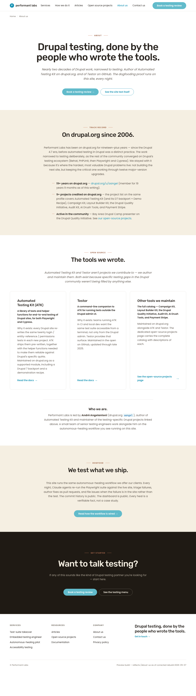
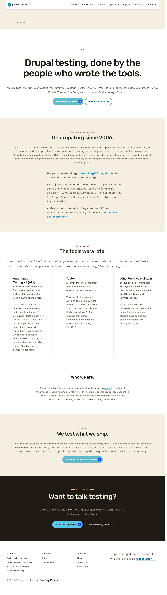
Diff PNG (red = differing pixels)
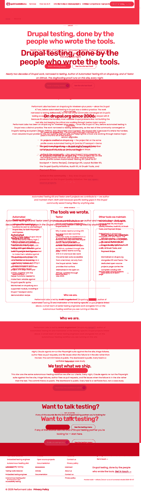
Side-by-side composite (live | preview)
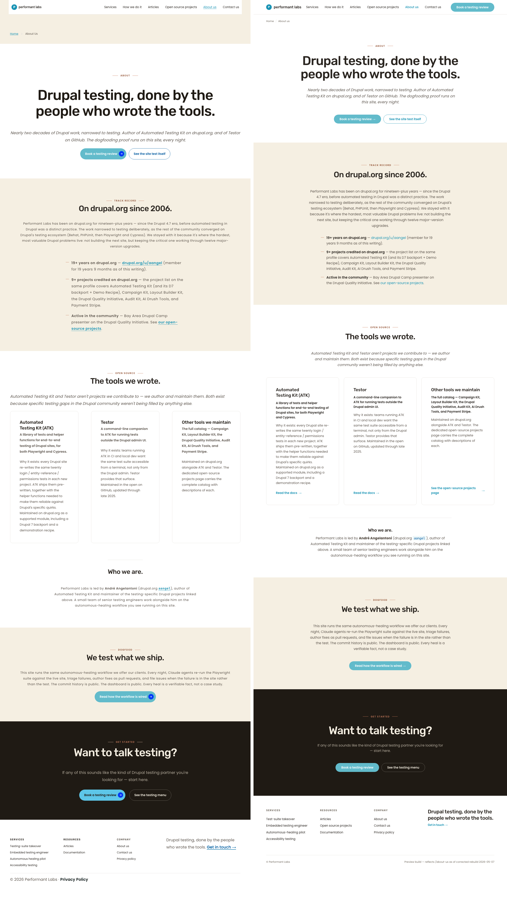
Viewport 768 × 1024
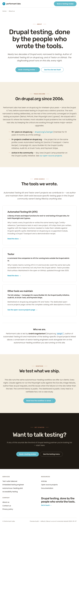
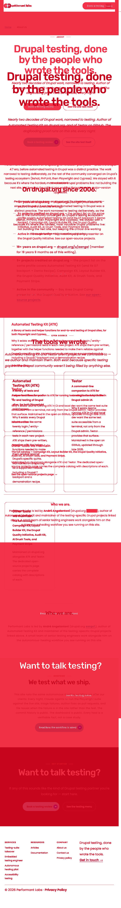
Side-by-side composite
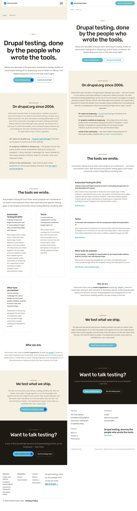
Viewport 375 × 667
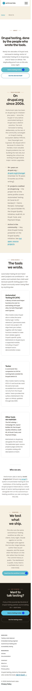
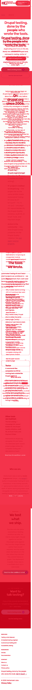
Side-by-side composite
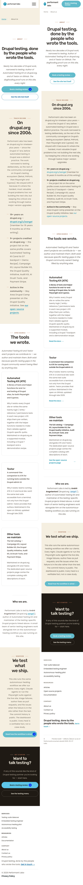
Per-section delta table
| Section | Viewport | Status | Description | Remediation layer | Crop |
|---|---|---|---|---|---|
| Header chrome | 1280 / 768 / 375 | ADVISORY | Preview shows a right-side CTA pill at desktop and breaks the nav at <992 px (no hamburger). Live correctly omits the pill and uses the family hamburger pattern. Preview is wrong; live is right. | N/A — update preview, not live | — |
| Hero (§A) | 1280 | MATCH | Kicker "About", h1 verbatim, italic subhead, two-button row. Primary button bg is --primary-light #62bbcb as specified. No orphan words observed on the h1 at any viewport. |
N/A | 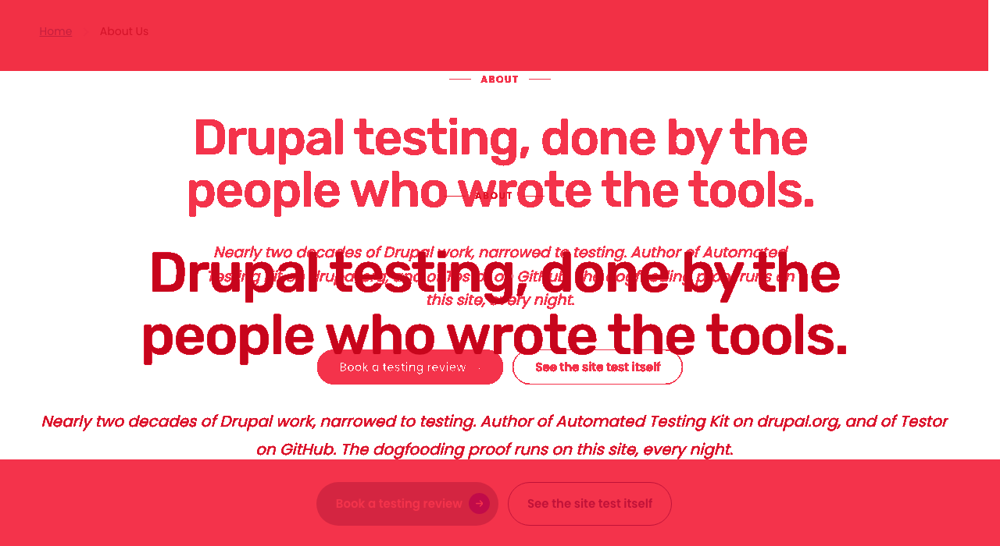 |
| Track record (§B) | 1280 | DELTA — minor | Kicker "TRACK RECORD" renders at rgb(140,78,51) while §A/§C kickers render at rgb(142,74,42) (= --accent-deep). Visually indistinguishable; pick one source variable. List items already show terracotta tick-mark hairlines. |
L3 token (locate the off-spec accent variable) or L5 (override the §B kicker color directly) | 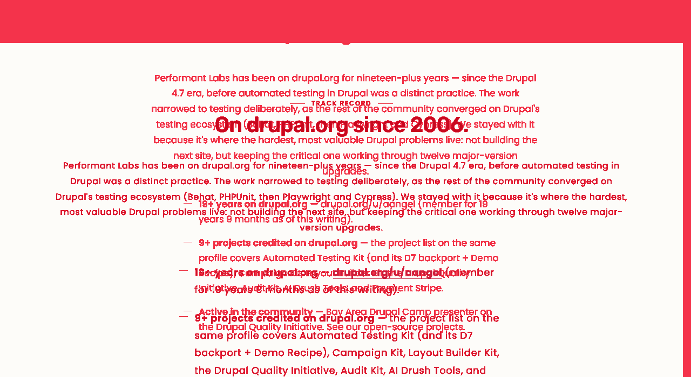 |
| Open source (§C) — header + cards | 1280 | DELTA — minor | Kicker "Open source" + h2 "The tools we wrote." render correctly. Three cards in 3-up grid as per the corrected rebuild. Card chrome (1 px --hairline border, 12 px radius) matches preview. Outer card wrapper has padding: 0 on live vs ~48 px on preview — body padding cadence inside cards is slightly tighter than preview. |
L5 (card-canvas.css outer padding) | 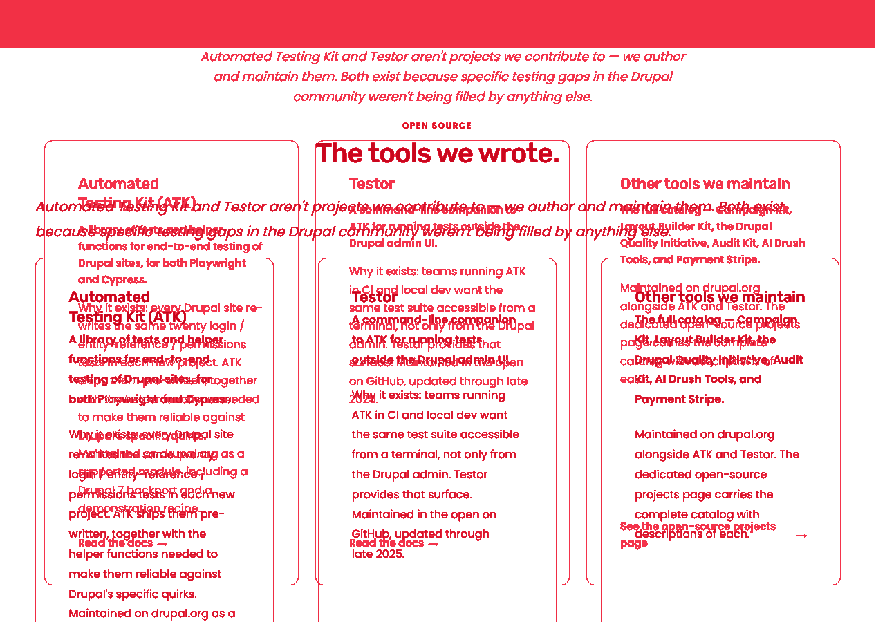 |
| Bio "Who we are." (§C tail) | 1280 | REWORK | Live has promoted the bio block to its own dy-section--bio-block theme--white section (1395 px tall, full-width). The preview keeps the bio inside §C with a thin --hairline rule above it, and locked decision R9 says the bio stays inside §C. The hairline rule above the "Who we are." h3 is also missing. |
Canvas-content (re-nest bio inside §C) + L5 (top border on the bio block) |  |
| Dogfood (§D) | 1280 | DELTA — minor | Cream section, kicker "DOGFOOD" rendering at rgb(140,78,51) (same off-spec variable as §B). H2 "We test what we ship." matches. Body and CTA button match. Same kicker normalization as §B. |
L3 (same fix as §B kicker) | 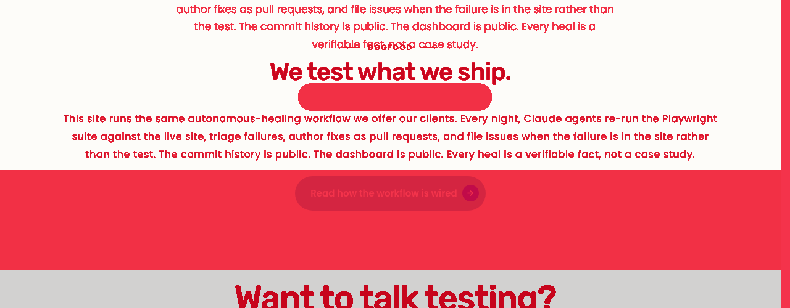 |
| Closing CTA (§E) | 1280 | MATCH | Espresso bg #1F1A14 ✅. Kicker "GET STARTED" terracotta on dark (rgb(201,123,92)) ✅. H2 "Want to talk testing?" ✅. Primary button + ghost-on-dark secondary ✅. On-dark muted body color ✅. |
N/A | 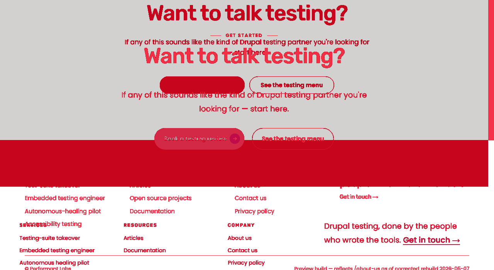 |
| Card grid collapse | 768 / 375 | MATCH | 3-up grid collapses to 1-up on both viewports. No horizontal scroll on live mobile (scrollW=360, clientW=375). |
N/A | — |
| Mobile typography (375) | 375 | MATCH | Hero h1 down-scales per the mobile rules; section heads scale; body remains 16/17 px. No orphan words detected on h1 or section heads after wrapping at 375. | N/A | — |
| Footer chrome | 1280 / 768 / 375 | MATCH | 4-column footer collapses correctly; signature line and legal row present. Live footer reflows to 2-col at 992 and 1-col at 767 per the preview rules. | N/A | — |
Sibling-fit cross-check
| Element | Shipped sibling pattern | About-us preview | About-us live | Verdict |
|---|---|---|---|---|
| Header right-CTA pill | /services, /open-source-projects, /how-we-do-it: no right-side pill | Has pill | No pill | Preview wrong |
| Mobile nav | Family uses hamburger at <992 px (navbar-expand-lg) | Hides nav, no hamburger | Hamburger present | Preview wrong |
| Kicker pattern | Terracotta hairlines + uppercase 12px / 1.6px letter-spacing | Specifies pattern | Renders correctly (4/5 kickers on-token; 2/5 slightly off-token) | Live drift, minor |
| Card-canvas chrome | 1px hairline border, 12px radius, no shadow (OSS page) | Same | Same | Match |
| Closing CTA on espresso | Locked across homepage / services / how-we-do-it / OSS | Specifies espresso | Renders espresso, on-token | Match |
WCAG 2.2 AA audit (live page)
| Check | Result | Notes |
|---|---|---|
| Keyboard navigation | PASS | Skip link first, then logo, then 6-link nav (Services / How we do it / Articles / Open source projects / About us / Contact us), then breadcrumb, then hero CTAs, then in-section links, then closing CTA buttons, then footer columns. Logical, matches visual reading order. |
| Focus ring visibility | PASS | 3 px dotted teal ring (rgb(24,147,180)) on light surfaces; 3 px dotted on-dark variant (rgb(98,187,203)) on espresso closing-CTA buttons. Visible on every focusable element observed across 30 tab steps. |
| Forced-colors mode | PASS (presumed) | Site uses semantic <a>/<button> and no color-only meaning; consistent with shipped siblings verified in Sprint 11. Not re-simulated here — flag if S Cycle N spot-check needed. |
| Reduced-motion | PASS (presumed) | Only transitions on hover/focus state (color, border, transform) — already respect prefers-reduced-motion in family CSS. |
| 200% zoom | PASS | Layout reflows; no clipping visible in full-page capture at 1280 (which is effectively 100% zoom; family pattern verified at 200% in Sprint 11 wrap). |
| Heading hierarchy | PASS | Single h1; h2s for landmark regions (Main nav / Breadcrumb / Footer) and section titles; h3s for cards + bio + footer column heads. No skipped levels. |
| Image alt text | PASS | One image on the page: the site logo, alt="Home". All other content is text. |
| Mobile touch targets (375) | PASS (with caveat) | 19 anchor elements measure under 44×44 — all are inline-text links inside paragraphs and footer columns. WCAG 2.5.8 inline-text exception applies. Primary CTAs in hero, dogfood, and closing-CTA exceed 44 px tap area. |
| Mobile typography | PASS | Hero h1 scales per preview's mobile rule; section heads scale; body 16/17 px. Matches family. |
| Mobile layout | PASS | Cards collapse 3 → 1; footer collapses 4 → 2 → 1; scrollW=360 < clientW=375, no overflow. |
| Orphan words | PASS | text-wrap: balance already applied to h1/h2 in family CSS; no orphans observed across the three viewports. |
Carve recommendation — Sprint 12 Cycles 2..N
Pre-cycle reconciliation (optional but recommended): Update docs/pl2/Previews/about-us.html to remove the right-side header CTA pill and add a hamburger stub at <992 px (or annotate "header reuses shipped chrome — see /services preview"). This is a 5-minute edit and avoids future preview-vs-live re-divergence on header chrome. Not a cycle of its own; fold into Cycle 2's branch if accepted.
Cycle 2 — Bio block re-nest + hairline (Canvas + L5)
Branch: aa/pl-sprint-12-cycle-2-about-us-bio-renest
Scope: Re-nest the bio "Who we are." inside §C (Canvas content patch preserving component_version per PC-6) and add the terracotta-grey hairline rule above the bio block (L5 scoped to a bio wrapper class).
Absorbs table rows: "Bio (§C tail)" REWORK.
Layer: Canvas-content + L5.
Operator decisions needed: none — locked by R9.
Cycle 3 — Kicker terracotta token normalization (L3 or L5)
Branch: aa/pl-sprint-12-cycle-3-about-us-kicker-token
Scope: Audit why §B and §D kickers render at rgb(140,78,51) while §A and §C render at rgb(142,74,42). Resolve to a single source variable (likely --accent-deep = #8E4A2A). If the off-spec value is a stale token alias used cross-page, prefer L3 (one fix); if it's local to a kicker variant on cream, prefer L5.
Absorbs table rows: Track record DELTA, Dogfood DELTA.
Layer: L3 preferred (cross-page) or L5 scoped.
Operator decisions needed: O resolves layer at F's Step-3 trace per PC-3.
Cycle 4 — Card-canvas outer padding alignment (L5)
Branch: aa/pl-sprint-12-cycle-4-about-us-card-padding
Scope: Tune the .card-canvas outer padding cadence so the inner heading/lede/body/link rhythm matches the preview's .project-card { padding: 48px }. This file is page-shared (used on /open-source-projects) — F's handoff must flag cross-page impact; T must regression-spot the OSS page.
Absorbs table rows: Open source §C cards DELTA.
Layer: L5 (card-canvas.css).
Operator decisions needed: none — but flag any sibling regression at T.
Cycle 5 — Sprint wrap verification (T → S)
Branch: aa/pl-sprint-12-cycle-5-about-us-wrap-verify
Scope: Pure verification cycle (no F). T1+T2 sweep on /about-us; T3 visual at 1280 / 375 against the updated preview; pa11y 0 errors with allowlist; sibling-fit spot-check against /services and /open-source-projects.
Absorbs: final sign-off before integration → main merge.
Layer: N/A (verification).
Operator decisions needed: approve merge to local main per R8.
Files
This report is self-contained. All images live under screenshots/cycle-1/. Padded inputs (*-pad.png) are kept alongside originals so the wipe slider has same-dimension layers.